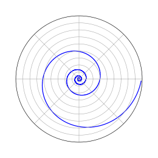
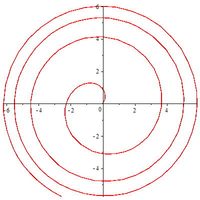

Equiangular Spiral
A logarithmic spiral, equiangular spiral or growth spiral is a special kind of spiral curve which often appears in nature. The logarithmic spiral was first described by Descartes and later extensively investigated by Jacob Bernoulli, who called it Spira mirabilis, "the marvelous spiral".

Logarithmic spiral (pitch 10°)
Equations
In polar coordinates $\bigg( r,\theta \bigg)$ the logarithmic curve can be written as
\begin{align} \ r = ae^{b\theta} \\ \end{align}
or
\begin{align} \ \theta = \frac{1}{b} ln(r/a)\\ \end{align}
with $e$ being the base of natural logarithms, and $a$ and $b$ being arbitrary positive real constants.
In parametric form, the curve is
\begin{align} \ x(t) = r(t)\cos(t) = ae^{bt}\cos(t)\\ \end{align} \begin{align} \ y(t) = r(t)\sin(t) = ae^{bt}\sin(t)\\ \end{align}
with real numbers $a$ and $b$.
Arc length
The arc length (as measured from the origin, $t=-\infty$ ), curvature, and tangential angle of the logarithmic spiral are given by
\begin{align} \ s(\theta) = \frac{a \sqrt{1+b^2} e^{b\theta}}{b} \\ \end{align} \begin{align} \ \kappa(\theta) = \frac{e^{-b\theta}}{a \sqrt{1+b^2}} \\ \end{align} \begin{align} \ \phi(\theta) = \theta \\ \end{align}
The Cesàro equation is then given by
\begin{align} \ s\kappa = \frac{1-a\kappa \sqrt{1+b^2}}{b} \\ \end{align}
On the surface of a sphere, the analog is a loxodrome.
Maple Sample Code

with(plots): f := proc (a, b) options operator, arrow; polarplot([t, a*exp(b*t), t = 0 .. 2*Pi]) end proc; f(1, 1/2)
To Developers
//Source code is not available
References